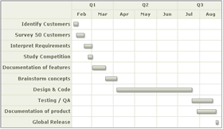
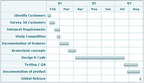
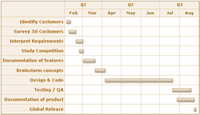
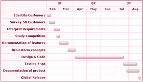

Gantt Chart > Basic Configuration
In this section, we'll see a few of the basic configuration properties exposed by the chart.
Please note that the chart actually offers a lot more properties than what's discussed here - you can find a list of all of them in the XML Sheet.
We'll study the following properties here (click on each one of them to directly scroll to the respective section):
- Customizing color palettes
- Customizing font properties for categories, process names etc.
- Defining task labels and showing/hiding them
- Showing/hiding task start and end dates
- Adding process header and customizing its cosmetics
- Adding more columns to data table
Let's see each of them in detail.
FusionWidgets Gantt chart offers 5 pre-defined color palettes for you to choose from. Each of these palettes are accessible by the number 1-5. To choose a palette, all you need to do is set:
<chart palette='2' or '3' or ..>
Shown below are a few examples of palettes applied on our previous chart:
 |
 |
<chart palette='2'...> |
<chart palette='3'...> |
 |
 |
<chart palette='4'...> |
<chart palette='5'...> |
Additionally, you can also define an entire new palette by setting a single theme color using:
<chart paletteThemeColor='669933' ..>
This will create a new palette derived from this color and then color the chart as under:
The Gantt chart offers you multiple ways to customize font properties for various objects, like:
- For the caption, sub-caption and legend, you can use the STYLES feature to individually customize their font properties. Please see the section "FusionWidgets and STYLES"
- For categories and category labels, you've individual attributes to specify their font properties
- For process names also, you can specify the font properties using individual attributes.
You can specify font properties for all processes on the chart as a whole by setting:
<processes font='Arial' fontColor='0372AB' fontSize='13' isBold='1' isItalic='1' isUnderLine='1' bgColor='FFFFFF' align='center' vAlign='middle' ...>
There are a lot more possible attributes which have been discussed in the XML Sheet for Gantt chart.
Additionally, you can also over-ride the collective font settings for all processes by specifying the font property of each process individually as under:
<process font='Arial' fontColor='0372AB' fontSize='13' isBold='1' isItalic='1' ...>
Similar to processes, you can specify the collective font properties of all sub-categories within a <categories> element by specifying:
<categories font='Arial' fontColor='0372AB' fontSize='13' isBold='1' isItalic='1' isUnderLine='1' bgColor='FFFFFF' align='center' vAlign='middle' ...>
Or, you can specify the font property for each category individually using:
<category font='Arial' fontColor='0372AB' fontSize='13' isBold='1' isItalic='1' ...>
Apart from the process labels, you can also define task labels for each task and then show/hide them on the chart. To define a task label, you set:
<task start='04/06/2007' end='07/21/2007' label='Design & Code'/>
Here, we've defined the task label for a single task. By default, the task label is not visible on the chart. To make it visible, you need to set:
<chart showTaskLabels='1'..>
or
<tasks showLabels='1'>
or
<task start='04/06/2007' end='07/21/2007' label='Design & Code' showLabel='1'/>
Basically, the above attribute lets you control whether to show labels or not - collectively for all tasks or individually for a single task.
When you now view the chart, the task bar would show up with the label. Also, the label of task would appear in the tool text of the task bar:
Apart from showing the task labels, you can also show the task start and end dates by setting:
<chart showTaskStartDate='1' showTaskEndDate='1' > to show start and end dates for all tasks as shown under:

Or, you can opt to show the start and end date for individual task by setting:
<task start='04/06/2007' end='07/21/2007' label='Design & Code' showLabel='1' showStartDate='1' showEndDate='1'/>
This will result in:
The format in which the dates are displayed on the chart is customizable. Please see the section "Configuring date formats" on how to do the same.
You can add header (title) for the processes column in data table and customize its cosmetics by setting:
<processes fontSize='12' isBold='1' align='right' headerText='What to do?' headerFontSize='18' headerVAlign='bottom' headerAlign='right'>
This will result in:
...
<datatable headerVAlign='bottom'>
<datacolumn headerText='Who does?' headerFontSize='18' headerVAlign='bottom' headerAlign='right' align='left' fontSize='12' >
<text label='John' />
<text label='David' />
<text label='Mary' />
<text label='Andrew' />
<text label='Tiger' />
<text label='Sharon' />
<text label='Neil' />
<text label='Harry' />
<text label='Chris' />
<text label='Richard' />
</datacolumn>
</datatable>
...
</chart>

You can add any number of columns to this grid.
Since our chart width is relatively small here, a scroll bar comes up and allows the users to scroll through the data table. You can increase the width of data table by:
- Either increasing chart width.
- Or, by setting <chart ganttWidthPercent='0-100' > to a lower value. This attribute indicates the percent space (width) the gantt pane takes.
The data grid on the left is both scrollable and resizable i.e., the users can click on the drag handlers (vertical line separating two data columns) and drag them to resize the data column. Additionally, if you wish, you can also explicitly set the width of each data column using:
<datacolumn width='200' ..> - Sets data column width as 200 pixels
or
<datacolumn width='40%' ..> - Sets data column width as 40% of the entire data grid width
If you wish to hide the scroll bar of the data column, you can set:
<chart showFullDataTable='0' ..>
This will wrap & truncate the data labels and try to squeeze them in the required space (only if possible).